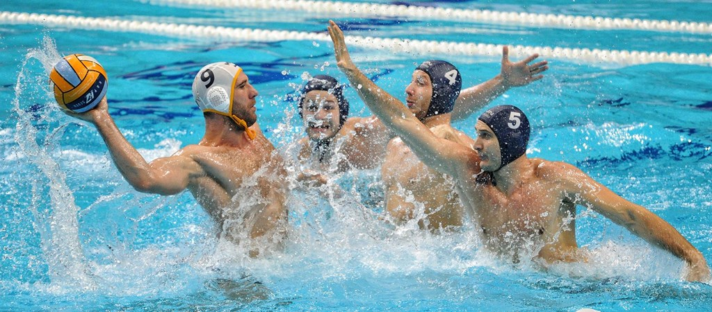
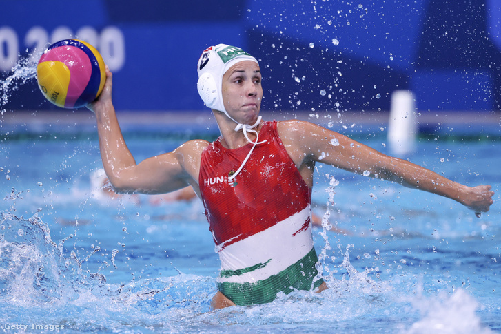

A William Wilson által kidolgozott „ősi szabályok” megalkotásától napjainkig sokat változott a vízilabdázás szabálya. A mérkőzés időtartama 2 × 10 perces félidőről negyedekre változott, csökkent a kapu és a labda mérete, változott a gól ismérve, a góllövés módja. 1886-tól a labdát már csak egy kézzel volt szabad érinteni. A bírói teendők is változtak az évek során. Pontosították szerepköreiket, meghatározták a szabálytalanságokat csökkentve a kezdeti brutalitást. A folyamatos szabálymódosítások kezdetben a mérkőzések erőszakosságát próbálták mérsékelni, majd a játék modernizálását szolgálták. Az ötvenes évektől kezdve a szabályváltoztatások a játék felgyorsítását célozták meg. Ma a világon mindenütt a FINA nemzetközi vízilabda szabályai érvényesek, mely a játéktérre, a vízilabdázás eszközeire, a csapatokra,a játékvezetésre, a góllövés módjaira, dobásokra, hibákra vonatkozó szabályokat tartalmaznak.
 